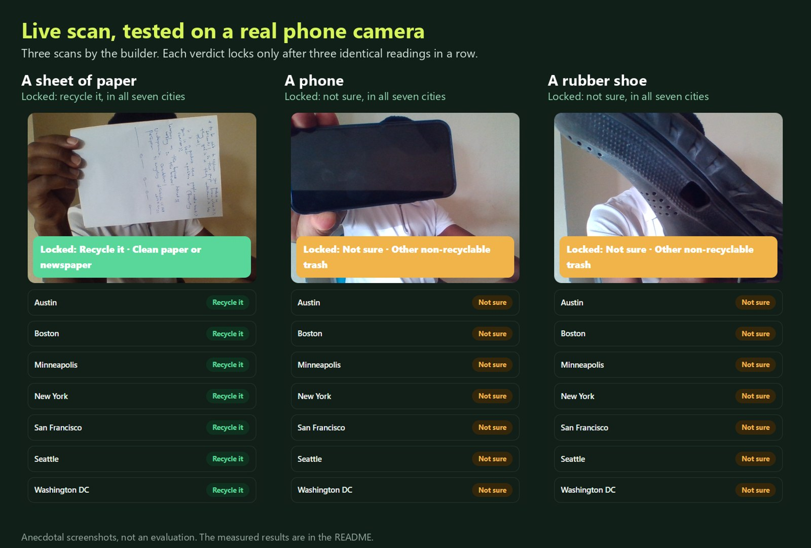

Laboratory results on small public datasets, not measured real-world impact. See the evidence and its limits.
The same item gets a different answer in every city.
Most "is this recyclable?" tools give one national answer. But recycling rules are set locally, and the costly mistake is the false accept: telling someone to recycle what their city will not take. These are real differences, each read from the city's official page.
Milk or juice carton
Three different answers
Plastic-lined coffee cup
Accepted in one city, rejected in the next
Greasy pizza box
Compost in some cities, unaddressed in others
Check an item in your city.
Pick a city, add a photo of one item, or tap a sample. The answer cites the rule it used.
or click to choose one, or take one on your phone
Experimental. Each frame is judged on its own, on your device; nothing is recorded or sent. A frame counts as locked only after three identical answers in a row. This mode has not been separately evaluated: treat a lock as a hint, then use the single-photo check.
Your answer appears here.
It shows the verdict, the rule behind it, a link to the city's own page, and what every other city would say about the same photo.
Point a phone at it. Seven cities answer.
Real screenshots from a phone camera on the hosted page: a sheet of paper locks as "recycle it" in every city; a phone and a rubber shoe stay "not sure" everywhere, which is the safe answer for items the model cannot place. Three scans by the builder, not an evaluation.

A rules table, plus a model that knows when to stay quiet.
Look
An OpenCLIP image model turns the photo into item probabilities, entirely on a CPU.
Look up
Each item is matched to what your city says about it, from a JSON rule table that cites its source page.
Add up
Probabilities are summed per city verdict: accept, reject, or "conditional" when the page is silent.
Decide
It answers only if one verdict clears a threshold chosen on validation data. Otherwise: "not sure".
Saying "not sure" does most of the safety work.
Photos from a dataset the model never saw (TrashNet). Each bar is the share of non-recyclable items wrongly told "recycle it".
What it does not do, said plainly.
A prototype that hides its limits cannot be trusted. These are in the README and on every answer.
No real-world impact is claimed
These are laboratory results on small public datasets. A real test would audit bins by weight before and after. That has not been run.
It cannot recognise some items
Batteries, greasy or food-soiled paper, and food waste had too few examples to learn. The answer says so every time.
It stays safe by saying "not sure" a lot
On photos from datasets it never saw, it wrongly rejects almost no recyclables, but it answers only about a quarter to two thirds of them. That caution is not a finished product, and the settings were tuned after seeing those tests.
Same item, seven cities.
Read straight from each city's published rules. No model involved. Hover or focus a cell for the rule's note and quote.
Green: the city's page accepts it. Red: it says no. Amber: the page is silent, so CurbCheck never answers it automatically.
Seven cities, each rule traceable.
Every rule links to the official page it came from and the date it was read. A script re-checks the quotes against the live pages.